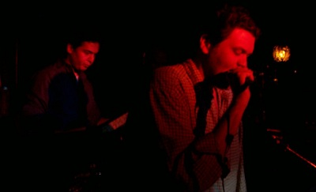

MOON UNITS KARAOKE
The Song List (By Song)
#
50 Ways to Leave Your Lover - Paul Simon
A
Ain't No Mountain High Enough - Marvin Gaye & Tammi Terrell
Alison - Elvis Costello
Another Brick in the Wall, Pt. 2 - Pink Floyd
Army - Ben Folds Five
Atomic Power - Uncle Tupelo
B
...Baby One More Time - Britney Spears
Back in the USSR - The Beatles
The Ballroom Blitz - The Sweet
Basket Case - Green Day
Billie Jean - Michael Jackson
Birthday - The Beatles
Black Hole Sun - Soundgarden
A Boy Named Sue - Johnny Cash
Brown Eyed Girl - Van Morrison
Brown Sugar - The Rolling Stones
Buddy Holly - Weezer
Build Me Up Buttercup - The Foundations
C
Can't Hardly Wait - The Replacements
Captain Jack - Billy Joel
Centerfold - J. Geils Band
The Christmas Song (Chestnuts Roasting) - Mel Tormé
Cinnamon Girl - Neil Young
Crazy - Patsy Cline OR Willie Nelson
Crazy Little Thing Called Love - Queen
Creep - Radiohead
Cut Your Hair - Pavement
D
Dancing in the Moonlight - King Harvest
Dancing in the Street - Martha & the Vandellas
Dancing with Myself - Generation X (Billy Idol)
December, 1963 (Oh, What a Night) - The Four Seasons
Different Drum - Linda Ronstadt
Do You Sleep? - Lisa Loeb & Nine Stories
Don't Look Back in Anger - Oasis
Don't Stop Believin' - Journey
Down on the Corner - Creedence Clearwater Revival
Dreams - Fleetwood Mac
F
Fat Bottomed Girls - Queen
Feliz Navidad - José Feliciano
Fight for Your Right (To Party) - The Beastie Boys
Fly Me to the Moon - Frank Sinatra
Fortunate Son - Creedence Clearwater Revival
Foxy Lady - Jimi Hendrix
Friends in Low Places - Garth Brooks
Frosty the Snowman - Gene Autry and the Cass County Boys
Fuck You! - Cee Lo Green
G
Ghostbusters - Ray Parker, Jr.
Gin and Juice - Snoop Doggy Dogg
Give It Away - Red Hot Chili Peppers
Glory Days - Bruce Springsteen
Gold Digger - Kanye West
Got to Get You into My Life - The Beatles
H
Hand in My Pocket - Alanis Morissette
Hang on to Yourself - David Bowie
Happy Xmas (War Is Over) - John & Yoko
Hard to Handle - The Black Crowes
Have You Ever Seen the Rain? - Creedence Clearwater Revival
Heart of Gold - Neil Young
Heart-Shaped Box - Nirvana
Help! - The Beatles
Hey Jude - The Beatles
Hey Ya! - Outkast
Hold the Line - Toto
Hopelessly Devoted to You - Olivia Newton-John
House of the Rising Sun - The Animals
How You Remind Me - Nickelback
I
I Am Woman - Helen Reddy
I Believe in a Thing Called Love - The Darkness
I Can't Help Myself (Sugar Pie Honeybunch) - The Four Tops
I Kissed a Girl - Katy Perry
I Love L.A. - Randy Newman
I Saw Her Standing There - The Beatles
I Touch Myself - The Divinyls
I Wanna Be Sedated - The Ramones
I Want You to Want Me - Cheap Trick
I Will Survive - Gloria Gaynor
I Wish - Stevie Wonder
I Won't Back Down - Tom Petty
If I Could Turn Back Time - Cher
I'm Down - The Beatles
In Bloom - Nirvana
In the Meantime - Spacehog
Interstate Love Song - Stone Temple Pilots
It's Not Unusual - Tom Jones
It's Raining Men - The Weather Girls
It's the End of the World as We Know It (And I Feel Fine) - REM
It's Tricky - Run-D.M.C.
J
Jack & Diane - John Cougar Mellencamp
Jailhouse Rock - The Blues Brothers
Jenny (867-5309) - Tommy Tutone
Jolene - Dolly Parton
The Joker - Steve Miller Band
Joy to the World (Jeremiah Was a Bullfrog) - Three Dog Night
K
Killing in the Name - Rage Against the Machine
L
Laid - James
Last Nite - The Strokes
Learn to Fly - Foo Fighters
Let It Snow! Let It Snow! Let It Snow! - Vaughn Monroe
Like a Prayer - Madonna
Like a Virgin - Madonna
Livin' on a Prayer - Bon Jovi
Long View - Green Day
Love the Way You Lie - Eminem
M
Mack the Knife - Bobby Darin
Maggie May - Rod Stewart
The Man in Me - Bob Dylan
Me and Bobby McGee - Janis Joplin
Message in a Bottle - The Police
Midnight Train to Georgia - Gladys Knight & the Pips
Moondance - Van Morrison
Mr. Jones - Counting Crows
Mrs. Robinson - The Lemonheads
My Hero - Foo Fighters
My Name Is Jonas - Weezer
N
No Rain - Blind Melon
None of Your Business - Salt-N-Pepa
Nuthin' but a 'G' Thang - Dr. Dre
O
Old Time Rock and Roll - Bob Seger
One Headlight - The Wallflowers
Ooh La La - The Faces
P
Panic - The Smiths
Paradise City - Guns N' Roses
Piano Man - Billy Joel
Piece of My Heart - Janis Joplin
Play That Funky Music - Wild Cherry
Plush - Stone Temple Pilots
Pour Some Sugar on Me - Def Leppard
Power of Love - Huey Lewis & the News
Proud Mary - Ike & Tina Turner
Psycho Killer - Talking Heads
Purple Rain - Prince and the Revolution
R
Rainy Day Women #12 & 35 - Bob Dylan
Rehab - Amy Winehouse
Respect - Aretha Franklin
Rich Girl - Hall & Oates
Rikki Don't Lose That Number - Steely Dan
Rock and Roll All Nite - KISS
Rock the Casbah - The Clash
Rolling in the Deep - Adele
Rudolph the Red-Nosed Reindeer - Gene Autry & the Pinafores
Runnin' Down a Dream - Tom Petty
S
Santeria - Sublime
Satisfaction - The Rolling Stones
Saturday Night's Alright (For Fighting) - Elton John
She's the One - Bruce Springsteen
Should I Stay or Should I Go? - The Clash
(Sittin' On) The Dock of the Bay - Otis Redding
Small Town - John Cougar Mellencamp
Somebody to Love - Queen
Son of a Preacher Man - Dusty Springfield
Song 2 - Blur
Spiderwebs - No Doubt
Spoonman - Soundgarden
Stacy's Mom - Fountains of Wayne
Straight Up - Paula Abdul
Suffragette City - David Bowie
Summer of '69 - Bryan Adams
Summertime - George & Ira Gershwin
Superstition - Stevie Wonder
Surrender - Cheap Trick
Sweet Caroline - Neil Diamond
Sweet Home Alabama - Lynyrd Skynyrd
Sympathy for the Devil - The Rolling Stones
T
Take on Me - a-ha
Takin' It to the Streets - The Doobie Brothers
Tempted - Squeeze
Tenth Avenue Freeze-Out - Bruce Springsteen
These Boots Are Made For Walkin' - Nancy Sinatra
Think - Aretha Franklin
Thriller - Michael Jackson
Thunder Road - Bruce Springsteen
Total Eclipse of the Heart - Bonnie Tyler
Touch Me - The Doors
Travelin' Band - Creedence Clearwater Revival
Two Princes - Spin Doctors
Two Tickets to Paradise - Eddie Money
U
Under My Thumb - The Rolling Stones
Under Pressure - Queen & David Bowie
Undone - The Sweater Song - Weezer
Up on Cripple Creek - The Band
V
Vertigo - U2
Video Killed the Radio Star - The Presidents of the USA
W
Walk Like an Egyptian - The Bangles
Walk This Way - Aerosmith/Run-D.M.C.
We Didn't Start the Fire - Billy Joel
The Weight - The Band
Werewolves of London - Warren Zevon
What a Wonderful World - Louis Armstrong
What's Up? - 4 Non Blondes
When I Come Around - Green Day
With a Little Help from My Friends - The Beatles
Wrong Way - Sublime
The W.S. Walcott Medicine Show - The Band
Y
Y.M.C.A. - Village People
You Ain't Seen Nothing Yet - Bachman-Turner Overdrive
You Got It - Roy Orbison
(You Make Me Feel Like) A Natural Woman - Aretha Franklin
You Oughta Know - Alanis Morissette
You Really Got Me - The Kinks
You Shook Me All Night Long - AC/DC
You Won't See Me - The Beatles
Your Love - The Outfield
You're So Vain - Carly
You've Lost That Lovin' Feelin' - The Righteous Brothers
Z
Ziggy Stardust - David Bowie
